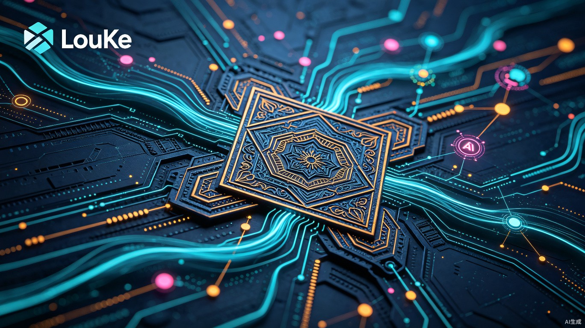

TDD 驱动的多 Agent 软件开发框架 —— 超越氛围编程，自是精密镂刻
LouKe 镂刻是什么，它要解决什么问题
当前，AI 仍然无法独立构建一个复杂软件系统。即便是最先进的 Agent，在面对企业级项目时，仍然面临一个根本性问题：没有一种清晰、严格的方式来描述"需要构建什么样的软件"以及"如何判定每个功能已经正确实现"。人类开发者往往需要反复与 AI 沟通、修正，才能勉强得到一个可用的结果。这个过程效率低下，且质量不可控。我们需要一个新的框架，让人类只做最必要的事情——讲清需求并定义验收标准，然后让 AI 能够自主、可靠地完成软件构建。
市面上没有一句话能构建出来的复杂软件系统（除非是完全照抄已有项目）。在 Agent 时代，我们需要新的方法论来说清楚要构建什么样的软件、它的每一个功能应该如何判定已经实现。我们调研了 Speckit、Superpowers、Oh My OpenAgent 等类似方案，发现它们虽然在理念上很先进，但仍然无法严格锁定 AI 应该生产出什么样的软件。这些方案普遍存在以下问题：
LouKe 镂刻是一个 TDD 驱动的多 Agent 协作开发框架。它通过一组预定义好的专业 Agent 角色，按照严格的流程推进软件开发：从 Story/PRD 到 Spec、再到 Test Plan、最后到 Implementation。每个阶段都有明确的实施者和评审者，核心原则是先写测试，后写实现。
LouKe 镂刻将需求拆解成结构化的 GitHub Issue，通过双源设计（spec.md 设计源 + GitHub Issue 操作源）确保人与机器都能高效协作。所有产出必须满足退出条件才能推进到下一阶段，确保软件质量可控、可追溯。
为谁而做，在什么场景下使用
所有希望通过 AI 来构建复杂软件系统的开发者、技术团队和企业。无论是独立开发者想要快速实现产品原型，还是企业技术团队需要构建可维护的生产级系统。
在构建软件系统的全生命周期中使用：从需求澄清、规格定义、测试设计、任务拆解到编码实现和验收交付，每个阶段都有对应的 Agent 协助。
无法让 AI 自动生成复杂的软件系统。现有的 AI 工具虽然能写代码片段，但面对需要多模块协作、复杂业务逻辑的完整系统时，仍然力不从心。
现有方案要么过于依赖单一大模型的能力，要么缺乏严格的流程约束和验收机制，导致产出质量不稳定、不可预期。
这个项目为什么重要
LouKe 镂刻的目标是建立一种新的开发范式：人类只做最必要的事情——清晰地表达需求并定义如何验收，剩下的工作由一套清晰的框架和多 Agent 协作系统来完成。这意味着：
在 Agent 能力快速提升的今天，我们需要的不是更好的代码生成工具，而是更好的方法来指挥 Agent 工作。LouKe 镂刻就是这样一套"指挥系统"——它定义了谁（哪个 Agent）在什么时间做什么、做到什么程度算完成、如何验收。
这类似于传统软件工程中的 Scrum 或 Kanban，但专为 AI Agent 时代重新设计。
| 阶段 | 实施者 | 评审者 | 核心任务 |
|---|---|---|---|
| M-FOUND 项目奠基 | Scout | Warden | 勘探项目前置条件，创建 repo + GitHub Project |
| M-SPEC 定需求 | Sage | Lex | Sage 苏格拉底式追问产出 spec / Lex 审核 Spec + 验证 Issue |
| M-TESTPLAN 定测试计划 | Archer | Sage | Archer 设计 3 层测试策略 / Sage 审核（独有 spec 上下文） |
| M-ARCH 架构设计 | Archer | Prism | 架构 + 接口设计 / Prism 检查 spec↔code 一致性 |
| M-LOCK 需求锁定 | Maestro | 人类 | Sage quote-check + Lex 3 阶段 + 用户确认，三信号齐后锁定 |
| M-DEV 开发执行HOLD POINT | Devon | Prism → Keeper ★ | R-G-R 循环锻造代码 + 单测 / Prism 审视 + Keeper 门禁 |
| M-E2E e2e 开发HOLD POINT | Shield | Prism → Keeper ★ | B 级 e2e 测试 / 同上双人评审 |
| M-BUGFIX Bug 修复HOLD POINT | Devon | Keeper ★ | 复用 R-G-R 修 Bug / Keeper 守住门禁 |
| M-SECURITY 安全审计 | Judge (S 级) | 人类 | 模式扫描 + S 级语义审查 / 用户最终裁决 |
| M-MILESTONE 里程碑 | Librarian | Maestro | 蒸馏 raw → wiki / Maestro 关闭 milestone |
由 TRAE Work 生成的创意方案
项目名称：LouKe 镂刻
开源地址：github.com/zillionare/holdpoint
当前版本：v0.5.6
核心特性：
IDE-based Quote Dialogue：用户无需掌握 Git 操作，直接在 IDE 中编辑 spec.md 文件，通过 Markdown Quote Block 与 Sage Agent 进行苏格拉底式对话，澄清需求。
Issue Form Schema：结构化的 GitHub Issue 表单确保机器可稳定解析需求，避免"需求文档写得好好的，AI 理解偏了"的问题。
Red-Green-Refactor 循环：每个开发任务都遵循严格的 TDD 循环，确保代码质量和可维护性。
3 信号锁定机制：Sage quote-parser + Lex 3 阶段 + 用户确认，三信号齐才锁定 spec，确保需求质量。
hp CLI (32 commands)：工具强制的 Hold Point，hp keeper gate / hp judge security-audit 等 CLI 返回 exit 0/1。
| 框架 | spec 角色 | review 模式 | agent handoff | hold point 强制 |
|---|---|---|---|---|
| spec-kit (GitHub) | 驱动代码（单 agent） | 无 | N/A | 无 |
| superpowers (obra, 240k★) | 触发 skills | subagent review | TDD + subagent | TDD（test） |
| oh-my-openagent (64k★) | 指导 agent | team of agents | parallel | skills + hooks |
| LouKe 镂刻 (ours) | 让 Agent 担责 | 不同 agent per stage | 10 阶段转换 | hp CLI 工具强制 |
LouKe 镂刻正在探索一种全新的开发范式——超越氛围编程，自是精密镂刻。我们相信，清晰的需求定义加上严格的验证框架，是释放 AI 构建复杂系统能力的关键。
查看项目详情